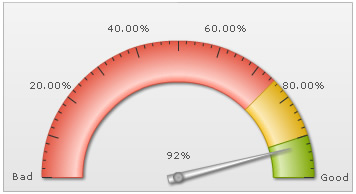
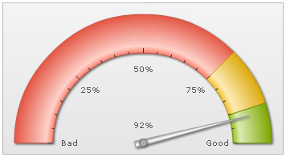
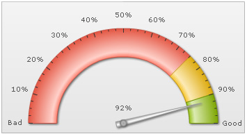
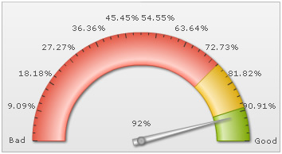
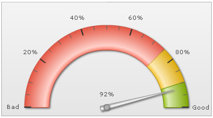

| Configuring tick marks |
Here, we'll see how to:
Let's see them one by one. |
| Show/hide tick marks and tick values |
You can opt to hide both the tick marks and tick values using: |
|
This will result in: |
| Configuring tick values |
You can opt to show every nth tick value by setting: |
|
This will result in every 2nd major tick mark's value being shown, as under: |
You can also set the decimals for the tick values using: |
|
Here, we've set tick value decimals as 2 and forced them to display. It will result in: |
|  |
| Placing tick marks & values inside |
You can opt to show tick marks & tick values inside by setting: |
|
This will result in: |
|  |
| Configuring number of major and minor tick marks |
You can configure the number of tick marks as under: |
|
It will result in: |
|  |
As you can see above, the chart has automatically adjusted the number of major ticks to a best feasible value. However, if you do not want the chart to do the same, you can add: |
|
It will then result in: |
|  |
| Configuring tick mark cosmetics |
You can configure tick mark cosmetics using: |
<chart ... majorTMColor='333333' majorTMAlpha='100' majorTMHeight='10' majorTMThickness='2' minorTMColor='666666' minorTMAlpha='100' minorTMHeight='7' minorTMThickness='1' ...> {
|
|
This will result in: |
|  |
| Setting tick value paddings |
You can configure the tick value padding (in pixels) as under: |
|
This will result in: |
|
Starting FusionWidgets XT, you can ask the chart to automatically manage the overlapping of tick values using manageValueOverlapping='1' and autoAlignTickValues='1' in the <chart> element. |